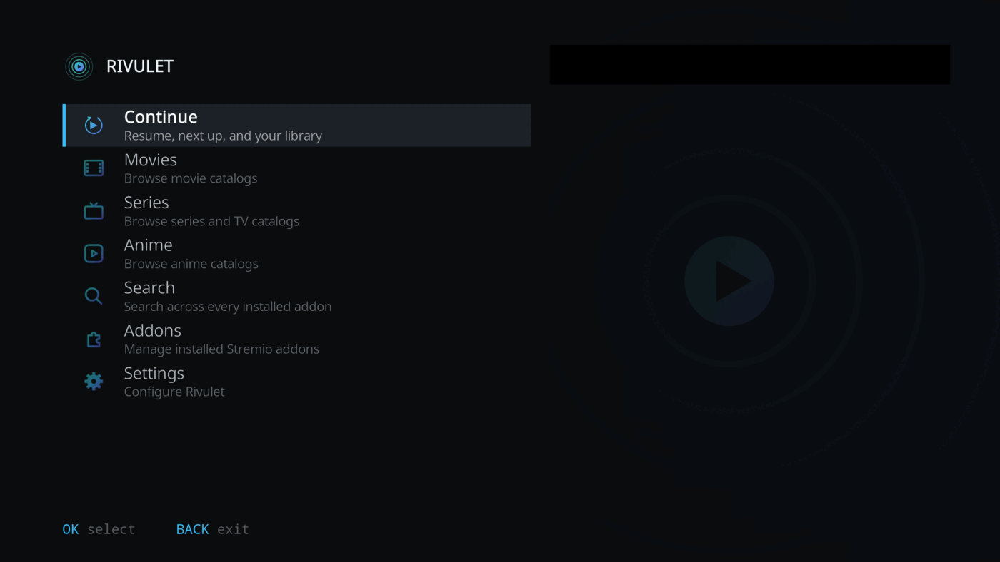
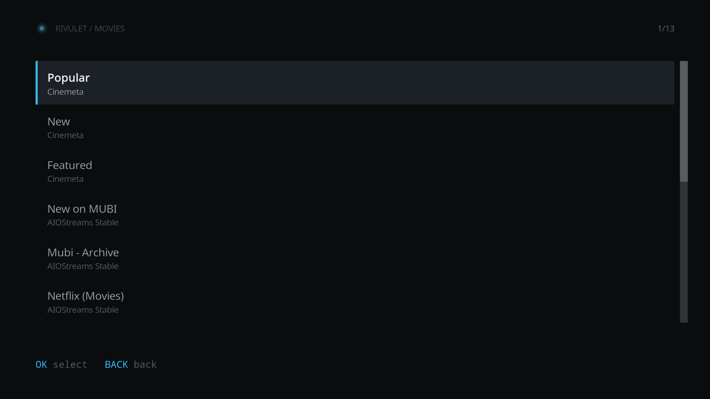
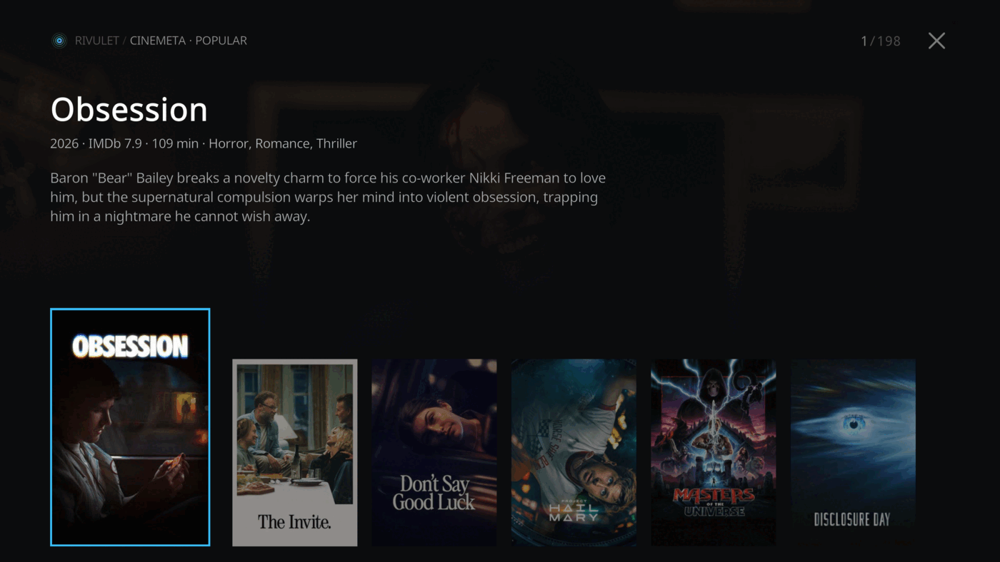
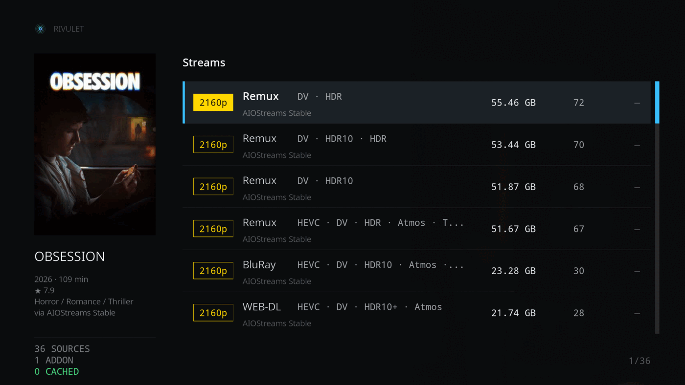
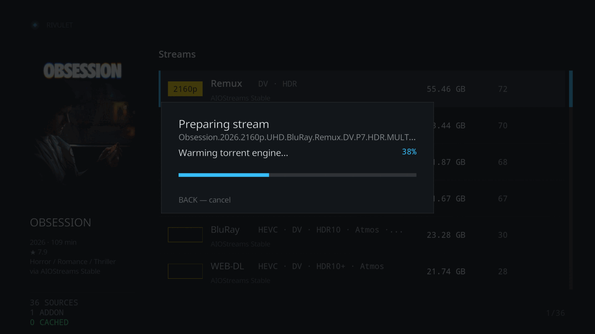
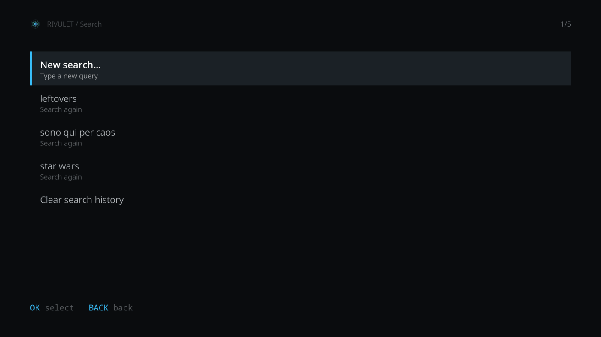
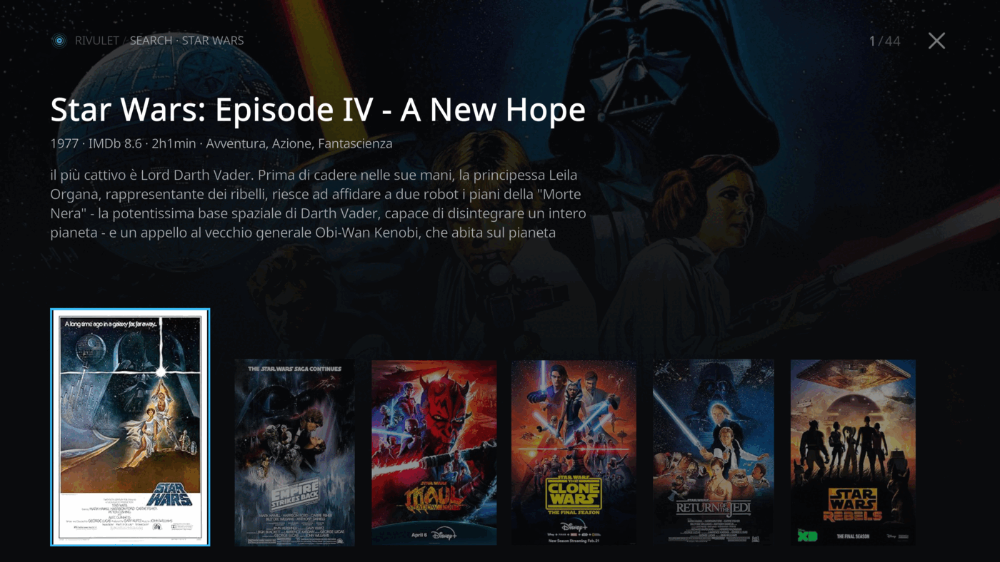
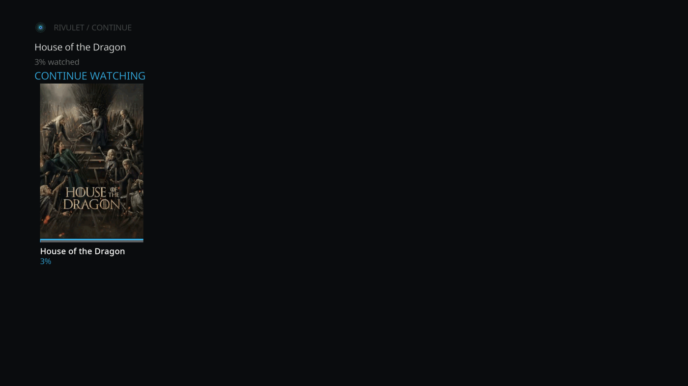
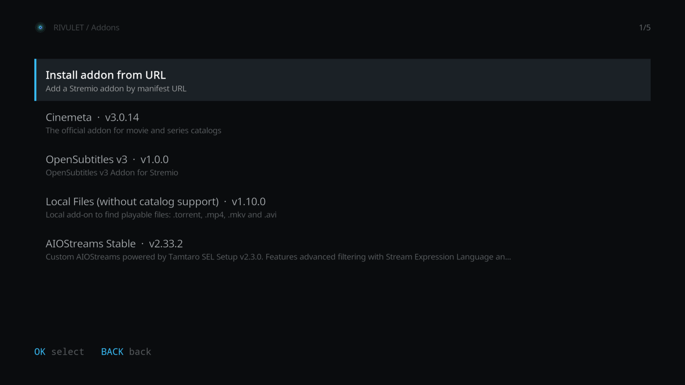

Custom Home/Browse/Search UI
Home, catalog browsing, Search, Detail and Streams screens built for the couch — no dropping to Kodi's classic directory.
A Kodi video add-on that reimplements the Stremio client experience — discover and search catalogs, manage add-ons, resolve streams, and play, all from a custom, couch-first UI.

Rivulet does not host, index or provide any media content — it's a client for third-party Stremio add-ons you install yourself.
Home, catalog browsing, Search, Detail and Streams screens built for the couch — no dropping to Kodi's classic directory.
Install Stremio add-ons straight from a manifest URL, and remove them again, without leaving Kodi.
A slow or unavailable add-on no longer stalls the rest — catalogs and sources are queried in parallel.
Log in to keep your add-on collection in sync both ways between Kodi and Stremio.
Pulled from your installed Stremio subtitle add-ons at playback time, OpenSubtitles v3 preinstalled.
Download the right stremio-server-go build for your platform and run it embedded, or point at a server you already run.









You'll need to repeat this for every future release.
Prefer Kodi's own file manager? Settings → File manager → Add source → https://rivulet-kodi.github.io/plugin.video.rivulet/, then Install from zip file and pick it from there.
All playback resolves through a server speaking the same enginefs HTTP API as Stremio's own server.js — stremio-server-go is a pure-Go, drop-in implementation. Configure it under Settings → Streaming server.
| Setting | Purpose |
|---|---|
| Server URL | Where the streaming server listens. Defaults to http://127.0.0.1:11470 — point it at any local or remote instance. |
| Run embedded server | The background service spawns and supervises a local process for the Kodi session, and stops it on shutdown. |
| Server binary path | The executable to run when embedded. Leave empty to auto-detect from the add-on's bin/ folder, then PATH. |
No manual binary install needed — use Download stremio-server binary under Settings → Streaming server to fetch and integrity-check the right build straight from the stremio-server-go releases.
Rivulet does not host, index or provide any media content. It's a client for third-party Stremio add-ons that you install yourself, including catalogs, streams and subtitles.
No — Rivulet works fully anonymously. Logging in is optional and only syncs your installed add-ons with your Stremio account.
Tested across Python 3.8 through 3.13 — Kodi 19 "Matrix" through current releases.
Install the Rivulet Repository once and Kodi handles future updates itself.
From your installed Stremio subtitle add-ons at playback time — OpenSubtitles v3 comes preinstalled.